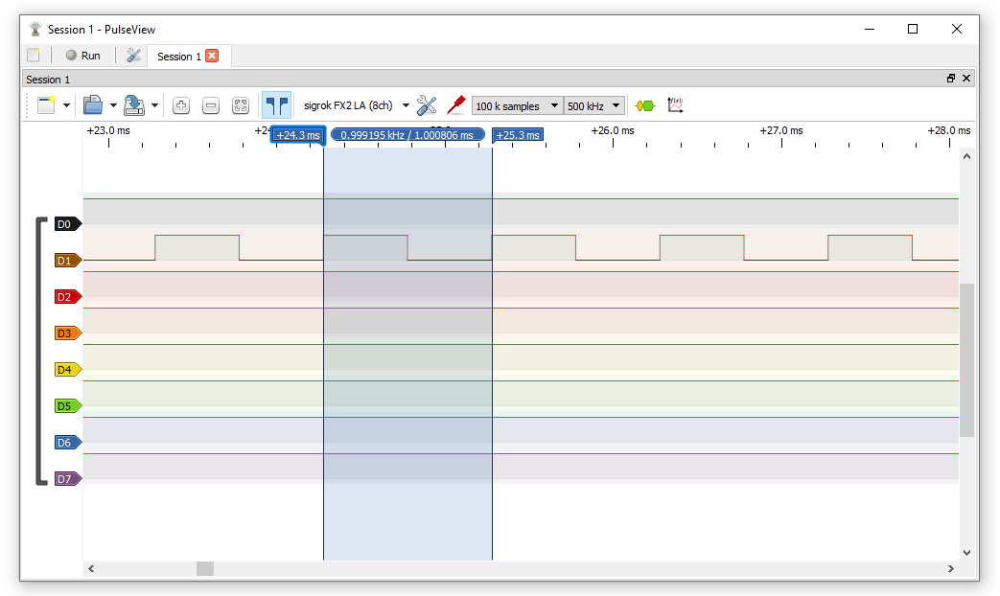
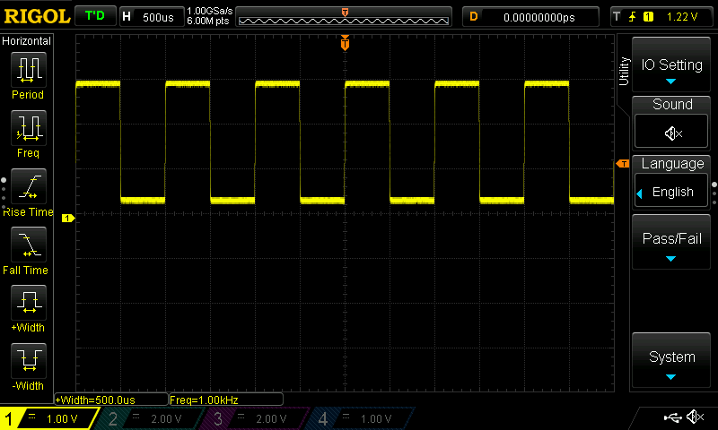

การใช้งานอุปกรณ์ USB Logic Analyzer และซอฟต์แวร์ PulseView#
▷ USB-based 8-Channel Logic Analyzer#
อุปกรณ์บันทึกและวิเคราะห์สัญญาณดิจิทัล (Logic Analyzer) ที่ได้นำมาทดลองใช้คือ อุปกรณ์ที่ใช้ชิป Infineon / Cypress EZ-USB FX2(LP) / CY7C68013A หรือ Corebai CBM9002A (เป็นชิปของบริษัทในประเทศทจีน และนำมาใช้แทนที่ชิป CY7C68013A) ซึ่งมีราคาไม่แพง และมีตัวอย่างอุปกรณ์ เช่น
รูป: MuseLAB's NanoDLA Logic Analyzer: USB Type-A vs. USB Type-C
รูป: การเปรียบเทียบชิปของอุปกรณ์: Corebai CBM9002A vs. Cypress CY7C68013A
รูป: WeAct Studio's LogicAnalyzer (v1)
รูป: ผังวงจรของ MuseLab NanoDLA v1.3

รูป: ผังวงจรของ WeAct Logic Analyzer v1
อุปกรณ์ที่ใช้ชิปประเภทนี้
- รองรับอินพุตแบบดิจิทัลได้ 8 ช่องสัญญาณ (D0..D7)
- มีอัตราการสุ่มสัญญาณสูงสุด 24 MHz (Sampling Rate)
- ใช้แรงดันไฟเลี้ยงจากพอร์ต USB ของเครื่องคอมพิวเตอร์
- รับแรงดันไฟฟ้าอินพุตได้ไม่เกิน 5.5V
- Low level: -0.5V .. +0.8V
- High level: +2.0V .. +5.25V
- ได้ติดตั้งเฟิร์มแวร์ที่มีชื่อว่า
fx2LAFwมาให้แล้ว - เชื่อมต่อกับคอมพิวเตอร์ผู้ใช้ผ่านทางพอร์ต USB เช่น USB Type-C โดยนำมาใช้งานร่วมกับซอฟต์แวร์ที่เป็น Open Source เช่น Pulse View
PulseView สามารถในการวิเคราะห์รูปแบบการสื่อสารข้อมูลแบบต่าง ๆ (Protocol Decoder / Analyzer) เช่น การสื่อสารข้อมูลแบบ UART, I2C, SPI, I2S, CAN, Modbus, JTAG เป็นต้น
▷ การใช้งาน PulseView#
เมื่อได้ติดตั้งและเปิดใช้งานซอฟต์แวร์ PulseView (ทดลองใช้เวอร์ชัน v0.5.0 สำหรับ Windows 10) และเชื่อมต่อกับอุปกรณ์ USB Logic Analyzer ได้แล้ว ถัดไปเป็นการลองใช้ซอฟต์แวร์ PulseView
ข้อสังเกต: สำหรับผู้ใช้ Windows จะต้องใช้โปรแกรมอย่างเช่น Zadig หรือ SysProgs USB Driver Tool เปลี่ยน USB Driver สำหรับอุปกรณ์ดังกล่าวให้เป็น WinUSB จึงจะใช้งานร่วมกับซอฟต์แวร์ PulseView ได้
รูป: การติดตั้ง WinUSB Driver (Windows 10) สำหรับอุปกรณ์ fx2LAFw
สำหรับผู้ใช้ Ubuntu Desktop:
1) ติดตั้ง sigrok-firmware-fx2lafw และโปรแกรม pulseview
$ sudo apt install sigrok-firmware-fx2lafw pulseview
2) สร้างไฟล์ใหม่สำหรับ udev เช่น 55-fx2lafw.rules
ภายใต้ไดเรกทอรี /etc/udev/rules.d/ และใส่ข้อความดังนี้
# sigrok FX2 8ch
SUBSYSTEM=="usb", ATTR{idVendor}=="1d50", ATTR{idProduct}=="608c", MODE="0664", GROUP="plugdev"
3) ทำคำสั่งเพื่อให้ udev อัปเดตและใช้งานไฟล์ดังกล่าว
$ sudo udevadm control --reload-rules && sudo udevadm trigger
4) ทำคำสั่ง $ pulseview & เพื่อเรียกใช้โปรแกรม
ขั้นตอนถัดไปคือ การตั้งค่าใช้งาน ดังนี้
- การเลือกใช้ช่องอินพุต จำนวนไม่เกิน 8 ช่อง (D0..D7)
- การเชื่อมต่อสายสัญญาณของอุปกรณ์ไปยังจุดทดสอบในวงจร และต่อสาย GND ร่วมด้วย
- การตั้งค่าเพื่อกำหนดเงื่อนไขการเริ่มการบันทึกข้อมูล หรือเรียกว่า Trigger Type เช่น ขอบขาขึ้น (Rising Edge) หรือขอบขาลง (Falling Edge) หรือได้ทั้งสองกรณี (Any Edge) เป็นต้น
- การตั้งค่าอัตราการสุ่มสัญญาณหรือชักตัวอย่าง (Sampling Rate):
- การเลือกใช้ความถี่ที่สูงขึ้นอยู่กับอัตราการเปลี่ยนแปลงของสัญญาณที่ได้นำมาทดสอบ สัญญาณที่มีการเปลี่ยนแปลงอย่างรวดเร็ว ก็ต้องเลือกใช้ความถี่ในการชักตัวอย่างให้สูงกว่า
- ถ้าตั้งค่าความถี่เท่ากับ 1MHz และมีจำนวนข้อมูล 1M (หนึ่งล้านข้อมูล) ก็จะบันทึกเหตุการณ์ที่เกิดขึ้น ได้ภายในระยะเวลา 1 วินาที เท่านั้น แต่ถ้าลดความถี่เป็น 100kHz ก็จะได้ช่วงเวลาที่สามารถบันทึกข้อมูลได้นานขึ้น 10 เท่า
รูป: การเลือกอุปกรณ์เพื่อใช้งานใน PulseView
รูป: การเลือกอุปกรณ์ Demo (อุปกรณ์สมมุติ) เมื่อกดปุ่ม Run/Stop จะปรากฏรูปคลื่นสัญญาณตัวอย่าง
รูป: รายการอุปกรณ์ที่สามารถนำมาใช้กับ PulseView ได้

รูป: ตัวอย่างการวัดสัญญาณทดสอบ 1 ช่องอินพุต ซึ่งเป็นสัญญาณคลื่นสี่เหลี่ยม (ความถี่ 1kHz หรือคาบเท่ากับ 1msec)

รูป: ตัวอย่างการวัดสัญญาณทดสอบโดยใช้ออสซิลโลสโคปแบบดิจิทัล (RIGOL DS1054Z) ได้ความกว้างของหนึ่งคาบเท่ากับ 1msec
รูป: การตั้งค่าสำหรับ Sampling Rate และจำนวนข้อมูล (Samples) ใน PulseView
รูป: ตัวอย่างการวัดสัญญาณ SCL และ SDA สำหรับบัส I2C และเปิดใช้งาน I2C Protocol Decoder
▷ UART Protocol Decoder#
ถัดไปเป็นตัวอย่างการใช้งานอุปกรณ์เพื่อวัดสัญญาณดิจิทัลจำนวน 2 เส้น ได้แก่ Tx (Serial Data Transmit) และ Rx (Serial Data Receive) ที่ใช้ในการสื่อสารข้อมูลแบบ Asynchornous Serial / UART
บอร์ดไมโครคอนโทรลเลอร์ เช่น Arduino Nano ได้ถูกนำมาใช้และโปรแกรมด้วย Arduino Sketch ที่ได้เตรียมไว้ เพื่อทำหน้าที่คอยรับข้อมูลทีละไบต์ที่เข้ามาทางขา Tx และส่งออกไปทางขา Rx ในลักษณะการทำงานแบบ Serial Loopback
ข้อมูลที่ได้จากการสุ่มสัญญาณ (Signal Sampling) จะถูกนำมาวิเคราห์และถอดรหัส หรือแปลงให้เป็นข้อมูลตามโพรโทคอลการสื่อสารข้อมูลแบบ UART ซึ่งจะต้องมีการกำหนดอัตราการรับส่งข้อมูล หรือ Baudrate และช่องสัญญาณที่ใช้เป็น Tx และ Rx เป็นต้น
ก่อนกดปุ่ม Run จะต้องมีตั้งค่าความถี่ หรือ Sampling Rate จำนวนข้อมูลที่ต้องการบันทึกลงในหน่วยความจำ (Sample Buffer) การกำหนดเงื่อนไขสำหรับ Trigger เพื่อให้เริ่มการบันทึกข้อมูล และช่องสัญญาณอินพุต (Trigger Source) ที่เกี่ยวข้อง
แนะนำให้ตั้งค่า Pre-Trigger Capture Ratio ให้มากกว่า 0% (แต่ไม่ควรเกิน 5%) ทั้งนี้เพื่อจะได้บันทึกข้อมูลก่อนเกิดเหตุการณ์ตามเงื่อนไขสำหรับ Trigger
ถ้าใช้เพียงสองช่องอินพุต เช่น D0 และ D1 ช่องสัญญาณที่เหลือไม่ได้ใช้ ก็สามารถปิดการแสดงผลได้ของแต่ละช่องได้ (Disable / Delete)
ในกรณีที่เปิดใช้งาน UART Protocol Decoder ก็จะต้องมีการตั้งค่าก่อนใช้งาน เช่น ช่องสัญญาณอินพุตสำหรับ Tx และ Rx รวมถึงค่า Baudrate การเลือกรูปแบบของการแสดงผลสำหรับข้อมูลไบต์ เช่น Dec, Hex หรือ ASCII เป็นต้น
รูป: การเปิดใช้งาน Protocol Decoder สำหรับการสื่อสารข้อมูลแบบ UART
รูป: การตั้งเงื่อนไขสำหรับ Trigger เช่น เลือกขอบขาลงสำหรับอินพุตช่อง D0
รูป: การตั้งค่าสำหรับ UART Decoder เช่น Frame Format, Baudrate, Data Format
รูป: แผงควบคุมสำหรับการเปิดหรือปิดการแสดงผลของสัญญาณอินพุตในแต่ละช่อง
รูป: ตัวอย่างการตั้งค่า Pre-Trigger Capture Ratio
▷ กล่าวสรุป#
บทความนี้ได้แนะนำการใช้งานอุปกรณ์ USB Logic Analyzer สำหรับวัดและบันทึกสัญญาณดิจิทัล และใช้งานร่วมกับซอฟต์แวร์ PulseView มีตัวอย่างการวัดสัญญาณพัลส์รายคาบ และวิเคราะห์สัญญาณดิจิทัลสำหรับการสื่อสารข้อมูลด้วย UART
บทความที่เกี่ยวข้อง
This work is licensed under a Creative Commons Attribution-ShareAlike 4.0 International License.
Created: 2023-01-18 | Last Updated: 2023-01-21